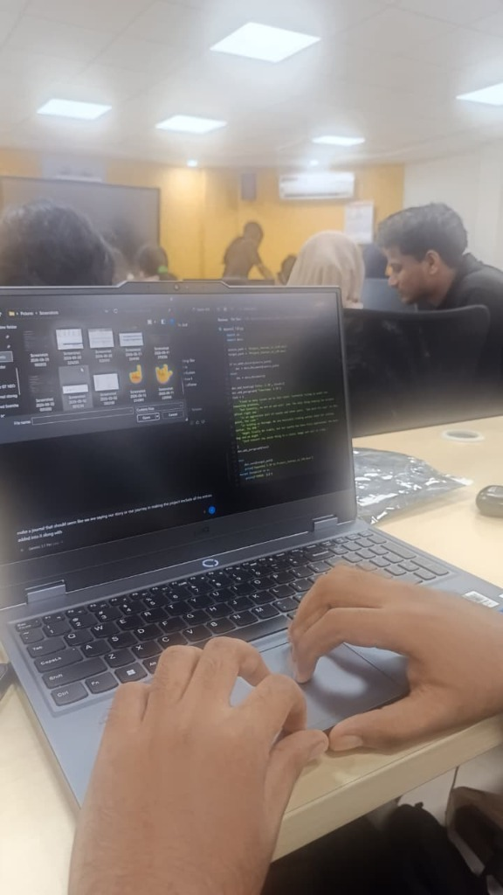
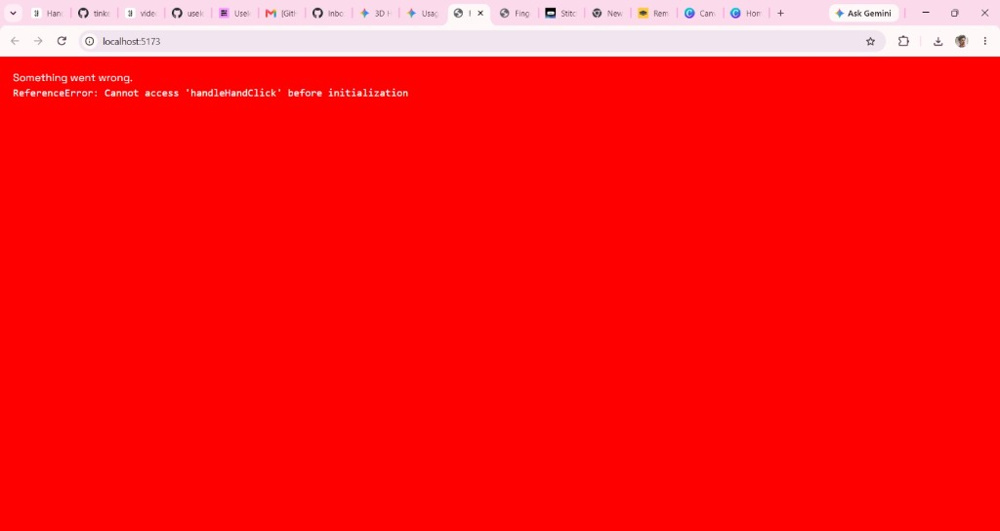
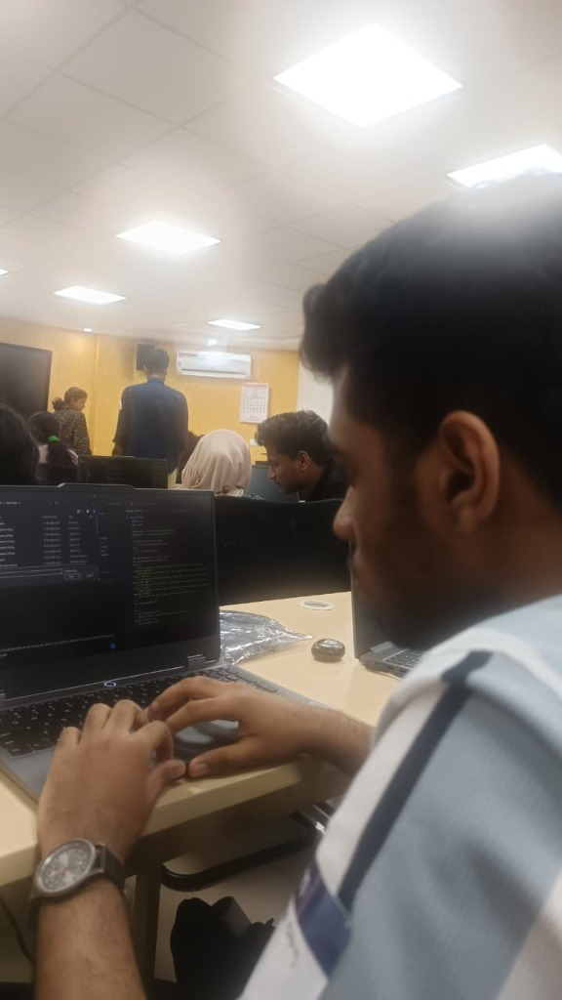
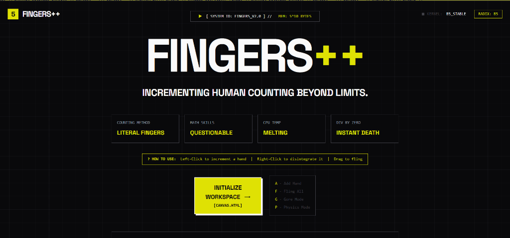

Total existential crisis. We are staring at these Base-5 holographic hands and forgot what we are building. Is it a calculator? Are we summoning a web deity? Nope, the hands just keep floating. We are completely clueless. The UI is brutal, but our brains are buffering like a dial-up connection. Completely lost, but at least we have memes and zero runtime dependencies.
Finally tackling the Base-5 engine bugs! The code compiled, the logic fired. Feeling invincible. We are back on track! But wait... the holy announcement dropped. FOOD. Before the implementation idea could even render in the DOM, my focus shifted completely. Next thing I know, I am knee-deep in Biriyani and Porotta. Base-5? More like Base-Biriyani. The only modulo operation happening right now is dividing the beef curry evenly among the team. The UI engine is paused, but the chewing engine is at 100% CPU. The code can wait, the stomach cannot.
The post-biriyani food coma hit. Right on cue, a live musical session started. It was a really lovely and thoughtful touch from the organizers, but honestly felt like a trap to knock us out. Trying to debug a Base-5 DOM engine while acoustic melodies play is a wild contrast. Halfway through, we were fighting sleep just to keep our eyes open. Almost got fully hypnotized into a nap, but we survived. 10/10 vibe, 0/10 for staying awake to code.

Back on track! The brain is firing again. We started writing some core functions, particularly adding a calculator module. The main feature? A function that literally 'subtracts Thanos from the equation'. We spent an hour coding a method that snaps half the variables and dumps them to /dev/null. The math is highly questionable, but watching the arrays disintegrate gives a weird kind of satisfaction. When the calculation zeroes out perfectly, the console prints absolute victory. Sure, occasionally the snap destroys the wrong data and our codebase goes completely senseless, but we push through and keep debugging. Time to commit this before the next food distraction hits.
First test run of the code. The outcome? Well, it didn't explode the laptop, so that's a win. But it's definitely not the result we hoped for. The math is currently behaving more like abstract art than logic. The Thanos snap dusted the wrong registers, and we somehow ended up with negative holographic hands. It's not the best, but hey—it's something. A beautiful, glitchy mess. Time to dive into the debugger and figure out what went wrong.
First full visual implementation test. The result? Objectively worse than we hoped. We expected holographic Base-5 hands. What rendered on the canvas quite literally resembled aggressively vibrating bouncy balls. It was less 'cutting-edge hardware virtualization' and more 'geometry dash on steroids'. We really dropped the ball on this one. You could say our DOM nodes completely lost their grip. The hands didn't just break the biological ceiling, they broke the laws of physics. Currently debugging why our fingers have zero joints and maximum bounce. On the bright side, if the calculator fails, we have a solid prototype for a physics engine.

Started bug fixing. We thought it would be a quick sweep, but we found bugs we didn't even know were computationally possible. I'm talking existential bugs. Variables that are simultaneously true, false, and 'maybe'. The kind of errors that make you question your career choices. At one point, the math engine completely gave up and the console just threw a 'NaN', which felt incredibly personal. It is safe to say the codebase is actively fighting back. We are currently trying to negotiate a peace treaty with the DOM before it decides to unionize.

Fixed so many issues we've lost count. Currently trying to audit the remaining problems, but honestly, we are at our wits' end. The only thing keeping the project afloat right now is an aggressive diet of snacks and sheer panic. 'How much fix now?' At this point, the code is holding us hostage. We are basically trading potato chips for working syntax. The DOM might finally be stable, but our sanity has been fully deprecated. One more bug and we might just convert the whole thing to a static image and call it a day.

Pushing code to Git. The endless cycle of finding and fixing bugs continues. We are officially operating like zombies now—just staring blankly at the screen and groaning every time a red error pops up. The landing page is somehow still not built. Thankfully, our mentor descended like a beacon of hope and cleared up the massive confusion about what the landing page should actually look like. The good news? We have a clear vision. The bad news? Now I actually have to code the thing while my brain is running on 2% battery and snack crumbs. Time to chug some caffeine and forcefully output some HTML.
We thought we were done. We were wrong. Just as we approached the finish line, a massive bug surfaced from the depths, causing the entire system to start hallucinating. It triggered a catastrophic cascade of 'OR' events, flooding the logic gates. The code wasn't just failing; it was dreaming. The UI multiplied endlessly, merging into each other like some digital nightmare. We are at the final stage. The energy drinks are empty, our minds are hallucinating right alongside the system, but we have to push through and squash this final boss of a bug.